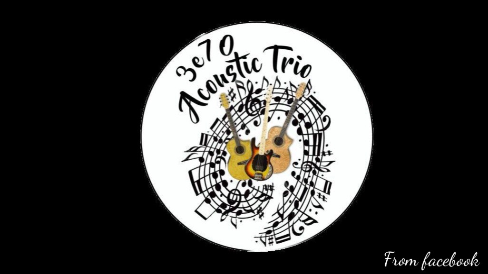
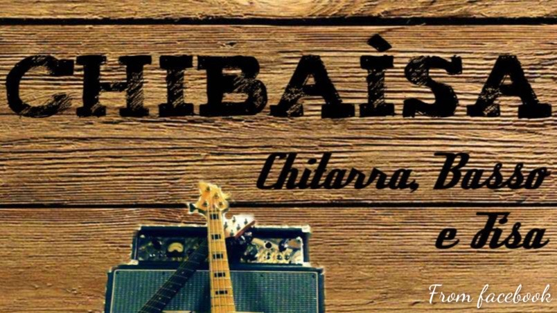
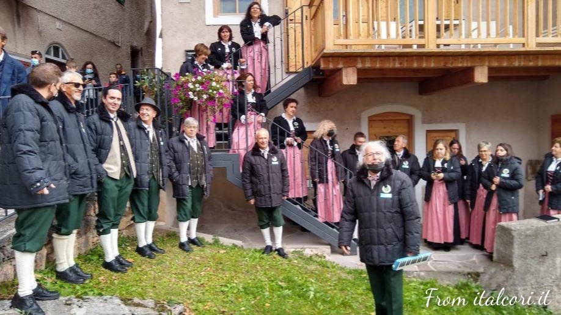
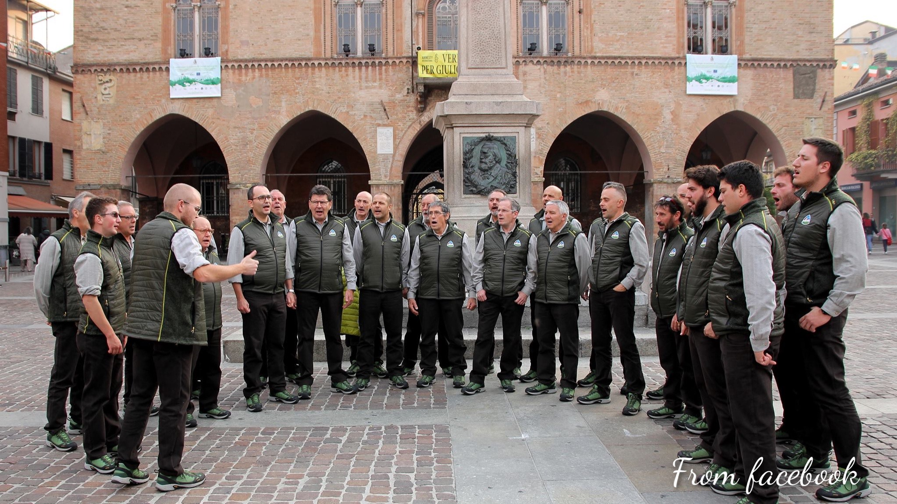

Musica trentina -> Band dell'Alpe Cimbra

3e70 Trio acoustic
I 3e70 Trio acoustic sono un gruppo di Folgaria. La band propone un repertorio molto vasto: dal pop al blues, dal jazz al rock. Tutti i brani sono riadattati in versione acustica.
Video
Social e contatti

Chibaisa
I Chibaisa sono un gruppo folk proveniente da Luserna. Con fisarmonica, basso e chitarra allieteranno le vostre serate spaziando dal folk ai tormentoni del momento.
Video
Social e contatti
Musica trentina -> Cori dell'Alpe Cimbra

Coro Martinella
Nato nel 1979 il Coro Martinella è tra i più popolari dell'Alpe Cimbra. Il repertorio spazia dalla musica sacra ai canti popolari, dalla musica profana al pop e al gospel. Negli anni ha raggiunto grande popolarità; ha cantato anche per il Papa.
Video
Social e contatti

Coro Stella Alpina Lavarone
Il Coro Stella Alpina di Lavarone nasce nel dopoguerra. L'organo ha inciso due dischi e ha, nel suo repertorio, diversi inediti oltre che a cover di canzoni di montagna.
Video
Social e contatti